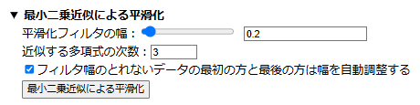
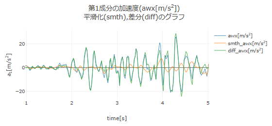
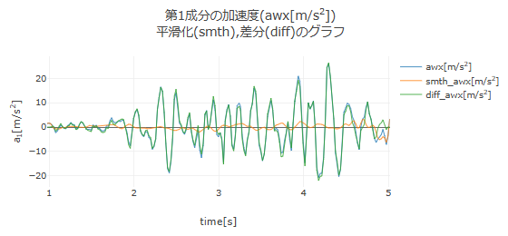
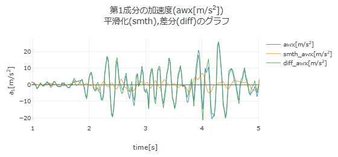

【操作方法】
■ 最小二乗近似によるデータの平滑化
本アプリでは，データの平滑化（ノイズ除去）の方法として，フーリエ変換による方法と最小二乗近似による方法を用意している．
ここでは，例として，下図のような加速度データが得られたとして，最小二乗近似を用いて平滑化 1) する方法を説明する．

最小二乗近似による平滑化では，平滑化フィルタ窓内にあるデータに対して，最小二乗法を用いて多項式関数でフィッティングし，フィルタ幅の中央における関数値をその点の平滑化されたデータの値とする．フィルタ窓をデータの左端から右端にずらしていきながら，同様のフィッティングを行って，平滑化されたデータを得る．この方法は，測定データの時間刻み幅が常に一定であれば，Savitzky-Golay平滑化 2) と同じである．

加速度データを読み込み，「分析に使用する時間領域の設定」を行うと，加速度データのグラフが表示され，その下に「加速度データの平滑化」のエリアが現れる．「▶ 最小二乗近似による平滑化」の行をクリックすると，最小二乗近似の設定欄が現れる．平滑フィルタの幅をスライダーもしくは数値の入力により設定し，近似する多項式の次数を入力する．データの両端はフィルタ幅がとれないので，自動調整するにチェックを入れておく（チェックを外すと両端が元データからずれる）．設定後，「最小二乗近似による平滑化」ボタンを押すと，平滑化された加速度のグラフが，元の加速度のグラフに重ねて，下図のように表示される（平滑フィルタ幅を0.2，近似する多項式の次数を3に設定）．

ここで，オレンジ線(smth_awx)が平滑化されたデータであり，緑線(diff_awx)は差分データ（元のデータから平滑化されたデータを引いたもの）を示す．平滑化されたデータのグラフ（オレンジ線）を見ると，細かい振動成分（ノイズ）が元のデータから除去されていることが分かる．
多項式の次数は3のまま変えずに平滑化フィルタの幅を0.5，1.0と増やした場合のグラフを順に以下に示す．急激に変化しているデータに対してフィルタ幅をあまり大きくすると，次数の低い多項式では近似できないことが分かる．

平滑フィルタ幅1.0，多項式の次数3の場合の平滑化

また，平滑化フィルタの幅を0.2，多項式の次数を0にした場合のグラフを以下に示す．次数が0の多項式とは定数のことであり，この場合，定数の値はフィルタ窓内のデータの平均値となる．

加速度データの平滑化を行うと，「数値積分する加速度データの選択」の欄が現れ，速度を求めるために数値積分する加速度として，「元のデータ」「平滑化データ」「差分データ」のいずれかを選択できるようになる．また，「平滑化のクリア」ボタンを押すと平滑化データと差分データのグラフを消去する．
速度や位置のデータについても，最小二乗近似による平滑化を同様に行うことができる．
【参照】
- Peter A. Gorry, General Least-Squares Smoothing and Differentiation of Nonuniformly Spaced Data by the Convolution Method, Analytical Chemistry 63, 534-536 (1991).
- Abraham. Savitzky and M. J. E. Golay, Smoothing And differentiation of Data by Simplified Least Squares Procedures, Analytical Chemistry 36, 1627-1639 (1964).